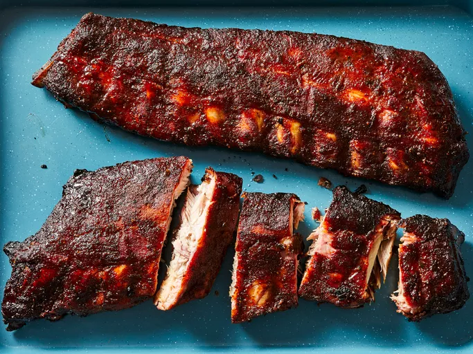

Sweet Smoked Pork Ribs
Sweet Smoked Pork Ribs

Description
This is an easy to learn recipe that results in some of the best smoked ribs I've ever had!
Rib Ingredients
- ¼ cup salt
- ¼ cup white sugar
- 2 tablespoons packed brown sugar
- 2 tablespoons ground black pepper
- 2 tablespoons ground white pepper
- 2 tablespoons onion powder
- 1 tablespoon garlic powder
- 1 tablespoon chili powder
- 1 tablespoon ground paprika
- 1 tablespoon ground cumin
- 10 pounds baby back pork ribs
Sauce Ingredients
- 1 cup apple juice
- ¼ cup packed brown sugar
- ¼ cup barbeque sauce
Steps
- Gather all ingredients.
- Prepare ribs: Stir salt, white sugar, brown sugar, black pepper, white pepper, onion powder, garlic powder, chili powder, paprika, and cumin together in a small bowl.
- Rub spice mixture all over ribs; cover with plastic wrap and refrigerate for at least 30 minutes.
- Make sauce: Stir apple juice, brown sugar, and barbeque sauce together until well combined. Set aside.
- Unwrap ribs and arrange in a single layer onto the wire racks of the smoker. Place the racks into a smoker, fill the smoker pan with apple, grape, pear, or cherry chips, and heat the smoker to 270 degrees F (130 degrees C). Cook ribs for 1 hour.
- Brush ribs with sauce. Continue cooking ribs, basting with sauce every 30 to 40 minutes, until meat is no longer pink and begins to shrink back from bones, 3 to 4 hours.
- Brush sauce onto ribs one last time and remove them from the smoker. Wrap ribs tightly with aluminum foil and allow to rest until juices reabsorb into meat, 10 to 15 minutes.
- Enjoy!